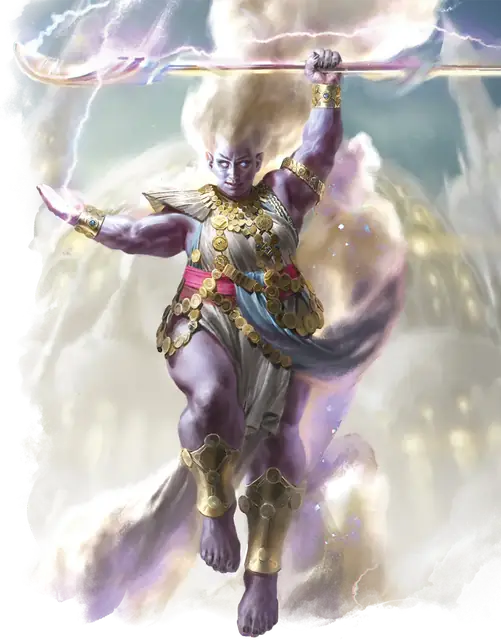

Джинн
Djinni
Большой Элементаль (Гений), Нейтральный

Класс Защиты 17 Инициатива +2 (12)
Хиты 218 (19к10 + 114)
Скорость 30 футов, Полёта 90 футов (парит)
| мод | спас | ||
|---|---|---|---|
| СИЛ | 21 | +5 | +5 |
| ЛОВ | 15 | +2 | +6 |
| ТЕЛ | 22 | +6 | +6 |
| мод | спас | ||
|---|---|---|---|
| ИНТ | 15 | +2 | +2 |
| МДР | 16 | +3 | +7 |
| ХАР | 20 | +5 | +5 |
Иммунитеты Звук, Электричество
Чувства Тёмное зрение 120 футов, пассивное Восприятие 13
Языки Первичный (Ауран)
Опасность 11 (7 200 опыта; БВ +4)
Особенности
Восстановление элементаля. Когда джинн умирает за пределами Стихийного плана Воздуха, его тело превращается в туман и спустя 1к4 дня заново возрождается совсеми Хитами где-то на плане Воздуха.
Сопротивление магии. Джинн совершает с Преимуществом спасброски от заклинаний и прочих магических эффектов.
Желания. Джинну с 30-процентным шансом известно заклинание Желание. Если оно известно джинну, он может сотворить заклинание только от имени другого существа (кроме гениев), если то сообщит ему желание понятным для джинна способом. Сотворение Желания таким образом не накладывает на джинна негативные эффекты, указанные в последнем параграфе описания заклинания. После того, как джинн сотворит это заклинание три раза, он не может сделать это снова, пока не истечёт 365 дней.
Действия
Мультиатака. Джинн совершает три атаки Грозовым клинком или Грозовым разрядом в любой комбинации.
Грозовой клинок. Бросок рукопашной атаки: +9, досягаемость 5 фт. Попадание: 12 (2к6 + 5) Рубящего урона плюс 7 (2к6) урона Электричеством.
Грозовой разряд. Бросок дальнобойной атаки: +9, дистанция 120 фт. Попадание: 13 (3к8) урона Звуком. Если цель — существо Большого размера или меньше, она Опрокидывается.
Создание смерча. Джинн призывает смерч в видимой им точке в пределах 120 футов. Тот заполняет область в виде Цилиндра радиусом 20 футов и высотой 60 футов с центром в этой точке. Смерч существует, пока джинн концентрируется на нём. Джинн может переместить смерч на расстояние до 20футов в начале каждого своего хода. Когда смерч входит в пространство существа или существо входит в смерч, оно подвергается воздействию следующего эффекта. Спасбросок Силы: Сл 17 (существо совершает этот спасбросок только один раз за ход, и эффект не воздействует на джинна). Провал: Пока цель находится в смерче, она Опутана и двигается вместе с ним. В начале каждого своего хода Опутанная цель получает 21(6к6) урона Звуком. В конце каждого своего хода цель повторяет спасбросок, оканчивая этот эффект при успехе.
Сотворение заклинаний. Джинн сотворяет одно из следующих заклинаний, не нуждаясь в Материальных компонентах (заклинательная характеристика — Харизма, Сл спасброска заклинаний 17):
Неограниченно: Обнаружение зла и добра, Обнаружение магии
2/день каждое: Сотворение пищи и воды, Хождение по ветру, Языки
1/день каждое: Газообразная форма, Невидимость, Образ, Планарный переход, Сотворение
Бонус мастерства +4
Среда обитания Прибрежье, Стихийный план Воздуха
Сокровища Магические
Джинн
Гений воздуха
Джинны — гении ветра и неба, символизирующие их свободу и силу. Они могут повелевать воздушными потоками и путешествовать подобно стремительному бризу, быть спокойными, как плывущие облака, или неистовыми, как бури.
Большинство джиннов наслаждаются своей свободой и жаждут познать чудеса мультивселенной. Они знают множество легенд и готовы обменяться этими историями с другими рассказчиками.
На Стихийном плане Воздуха обитает бесчисленное число джиннов, однако некоторые их собратья предпочитают строить свои воздушные замки на побережьях, где бушуют шторма, или высоко в облаках. В своих летающих городах гении собирают истории и впечатления со всех планов бытия и делятся ими на сказочных форумах, в библиотеках и театрах. Величайший из этих городов — Цитадель Льда и Стали. В её отполированных ветром башнях хранятся невероятные знания и невиданные сокровища целых городов.